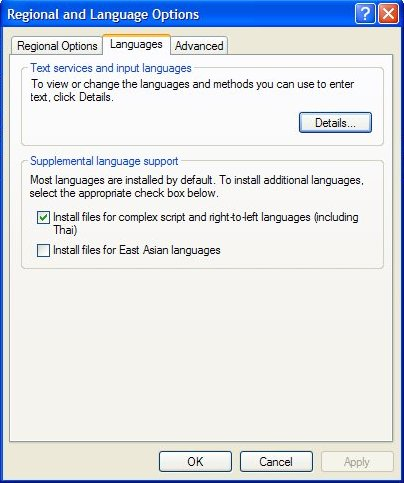

Supplemental Language Support is a Windows Built-In functionality which adds your system's support for all Indian Languages (including right-left languages like Urdu and Farsi). When this is Turned ON your system will support dealing with all types of complex fonts. These fonts basically form of Indian Languages, Hebrew, etc.
It is a very very simple procedure which is not enabled by default when you install Windows XP on your PC. So, it has to be done explicitly on any PC on which you want to use Indian Language Fonts.
Simple Steps To Follow
In Windows XP go to 'Control Panel' and click on 'Regional and Language Options'.
On the dialog box go to 'Languages' tab  and check the 'Check Box' for 'Install files for complex scripts and right-to-left languages (including Thai)' under the title 'Supplemental Language Support'
This will install necessary files for your PC. Depending on your particular OS installation it might ask you for your XP installation CD. Otherwise it will install files from the setup files' store.
Doing this, you will be able to see all Indian languages' text without any faults and Talapatram will work well.
For further solutions please follow this link.
{kind=link}